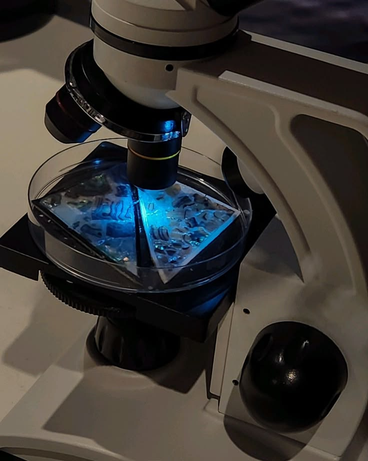
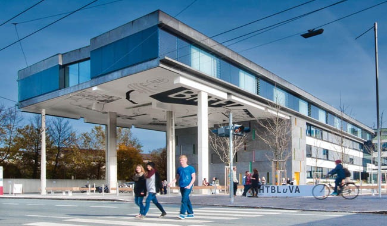

🩺 Tag der offenen Tür 🩺
HTL Salzburg- Biomedizin & Gesundheitstechnik
Medizin trifft auf modernste Technik
Entdecke die spannende Welt der Biomedizin und Gesunheitstechnik an der HTL Salzburg.
Mehr erfahren🏫 Unsere Schule 🏫
Die HTL Salzburg zählt zu den grösten technischen Schulen Österreichs und bietet moderne Ausbildung in vielen technischen Fachrichtungen.
Hier lernen Schülerinnen und Schüler Theorie und Praxis gleichzeitig kennen und arbeiten an innovativen Projekten.
Mehr Informationen über die HTL Salzburg finden Sie hier.
💻 ⚕ Warum Biomed? ⚕ 💻
Die Abteilung Biomedizin- und Gesundheitstechnik verbindet Medizin, Informatik und moderne Technik.
- Biomedizinische Signalverarbeitung
- Medizin-und Gesundheitsinformatik
- Medizinische Gerätetechnik
- Gesundheitswesen und Forschung
📸 Einblicke in unsere Ausbildung 📸



💼 Berufsmöglichkeiten 💼
- Medizintechnker/in
- Labor-oder Biotechniker/in
- Gesundheitsinformatiker/in
- Datenanalyst/in in der Medizin
- Projektmanager/in
⏰ Programm am Tag der offenen Tür ⏰
| Uhrzeit | Programm |
|---|---|
| 13:30 | Begrüßung |
| 15:00 | Laborbesichtigung |
| 16:00 | Biomed Vorführung |
| 17:00 | Fragerunde |
Catch The Virus
Klicke auf die Viren und sammle Punkte!
Punkte: 0
Zeit: 30
🚑 Emergency Room
Patient cannot breathe!